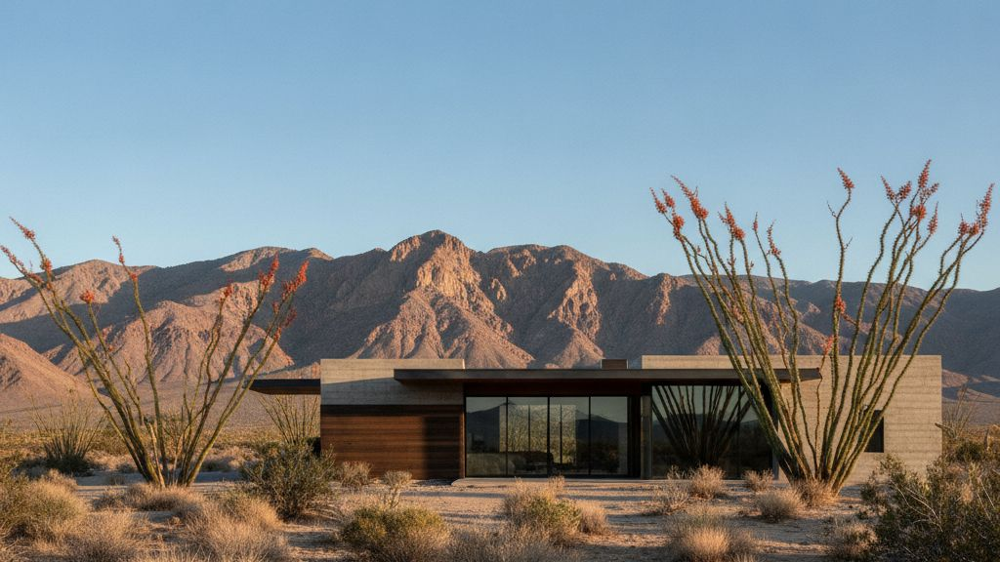
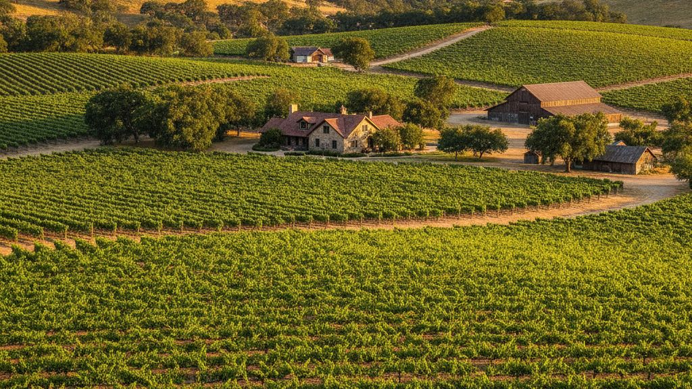
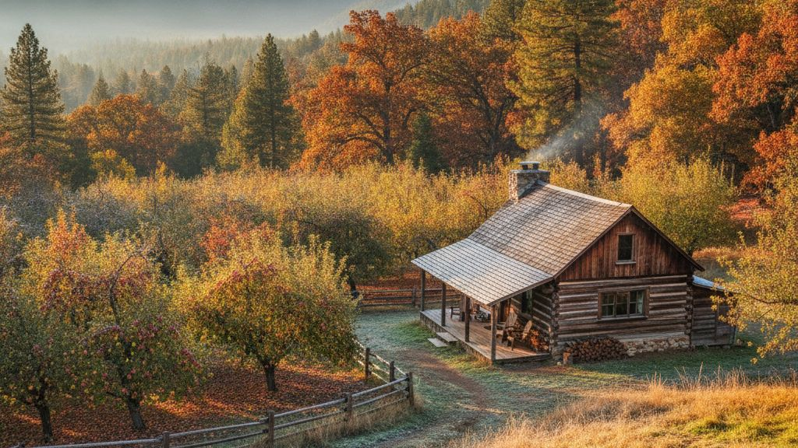

Ramona92065Ramona sits in an inland valley northeast of Poway and is known for larger lots, horse properties and a rural lifestyle within commuting range of the metro area.

Julian92036Julian is a former gold-mining town in the Cuyamaca Mountains, at roughly 4,200 feet, known for apple orchards and a small historic center.Santa Ysabel92070Santa Ysabel is a small, spread-out community at the junction of State Routes 78 and 79, in a grassy valley between Julian and Ramona.Ranchita92066Ranchita is a remote high-desert community on the east side of the mountains near the Anza-Borrego region, with a sparse population and wide open parcels.Warner Springs92086Warner Springs is a backcountry community in a broad valley at the northeast edge of the county, known for hot springs, gliding and cattle country.Jamul91935Jamul is a rural enclave in the foothills east of Chula Vista, with rolling hills, oak trees and large residential parcels.Dulzura91917Dulzura is a quiet backcountry community south of Jamul, in chaparral-covered hills along State Route 94.Campo91906Campo is a small community in the southeastern backcountry, close to the Mexican border and the Lake Morena area.Potrero91963Potrero is a tiny rural community in the southern backcountry, reached by State Route 94 near the border.Descanso91916Descanso is a forested mountain community along Interstate 8 east of Alpine, with national forest and state park land wrapping around it.Pine Valley91962Pine Valley is a mountain community of pines and oaks along Interstate 8 at roughly 3,700 feet in the Laguna Mountains foothills.Boulevard91905Boulevard is an isolated community in the southeastern mountains, on the transition between pine ridges and desert.Jacumba Hot Springs91934Jacumba Hot Springs is a small desert town on the Mexican border, near the Imperial County line, with a historic hot-springs resort past.Borrego Springs92004Borrego Springs sits as an island of private land inside California's largest state park, a designated dark-sky community with seasonal residents.Have a property that needs a value?
Send the address and the reason for the appraisal. You will get a firm quote and a schedule before anything is booked.